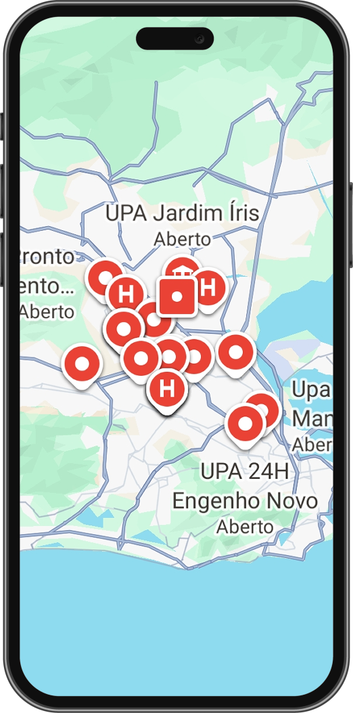

Conectividade
A falta de internet de qualidade ou de acesso à rede pode impedir o uso de serviços digitais de saúde.
Objetivo
O Observatório-VulneraDigital busca identificar e analisar barreiras digitais no acesso à saúde pública, organizando dados sobre conectividade, usabilidade, acessibilidade e letramento digital para apoiar pesquisas e ações de inclusão digital.
Problema
Conheça os principais obstáculos que afetam o acesso digital à saúde pública.
A falta de internet de qualidade ou de acesso à rede pode impedir o uso de serviços digitais de saúde.
Interfaces confusas, etapas complexas e erros podem dificultar agendamentos e outros procedimentos.

Recursos digitais que não consideram diferentes necessidades podem restringir a autonomia de pessoas com deficiência.
A dificuldade para entender instruções ou utilizar aplicativos pode tornar o acesso aos serviços mais difícil.
Como Funciona
O observatório organiza relatos sobre dificuldades de acesso digital aos serviços e os transforma em informações que ajudam a compreender a dimensão do problema.
Usuários relatam suas dificuldades com os serviços digitais de saúde.
As respostas são validadas e organizadas por tipo de barreira.
Gráficos e indicadores revelam a frequência e a distribuição das dificuldades identificadas.
Pesquisadores utilizam os dados para compreender as desigualdades digitais.
F.A.Q
Registrar e organizar informações sobre as dificuldades enfrentadas no acesso digital aos serviços públicos de saúde, contribuindo para pesquisas e para a compreensão das desigualdades existentes.
Usuários dos serviços públicos de saúde que desejam compartilhar suas experiências com os canais digitais. A participação ocorre por meio do formulário disponibilizado pelo projeto.
Os dados ajudam a identificar as principais barreiras ao agendamento de consultas e ao uso de serviços digitais de saúde, orientando pesquisas e propostas para melhorar o acesso da população.
Saiba mais
Toda barreira digital revela um desafio para o acesso à saúde. Conheça o Observatório-VulneraDigital e saiba como o projeto identifica obstáculos e produz dados para promover uma saúde pública mais acessível e inclusiva.